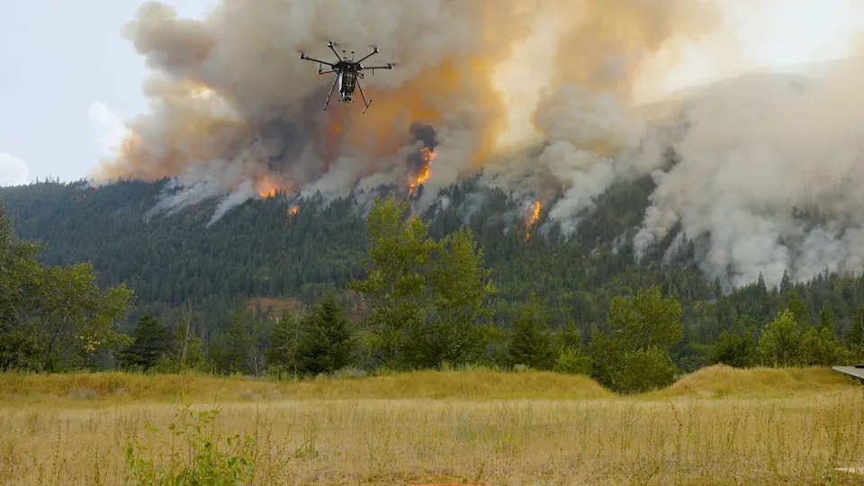
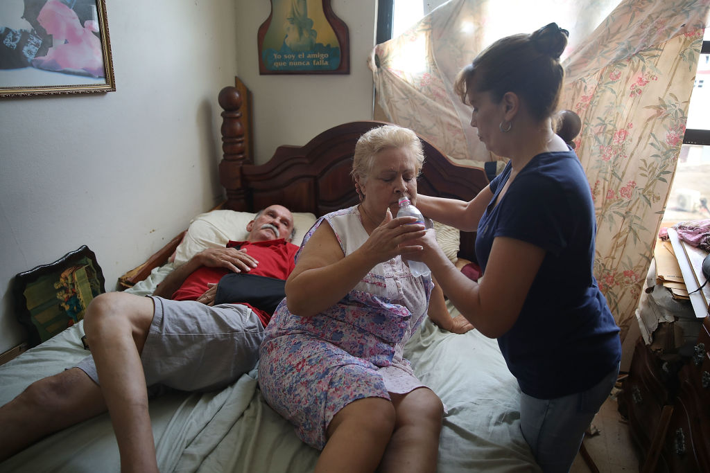

Our website is a platform called Atlas Social, created to encourage people to protect our Earth and build better environmental habits.
Users can share warnings, useful habits, and suggestions about protecting the environment.
It also encourages people to take action in their daily lives. By sharing simple ideas and good habits, we hope to create a community where everyone can become a Guardian of the Planet.
Goal is simple: Learn, Share, Act, To Protect our Earth.
Earth is not just where we live — it is our home.
Every breath we take, every drop of water we drink, and every piece of food we eat depends on this planet.
If we destroy nature, we are not only hurting the Earth we are hurting ourselves and the generations that come after us.
Protect Earth today, because there is no Planet B.
Extreme Heat & Drought: South Korea recently recorded its hottest day since records began at 42.5°C, while parts of central and southern Europe and the US face brutal heatwaves
British Columbia is battling over 110 active wildfires, with nearly 50 classified as out of control. The severe fire activity—driven by extreme dry fuel conditions
and lightning strikes—has forced thousands of evacuations, destroyed over 200 structures in the Okanagan region, and triggered widespread air quality alerts.


Source Article: As heatwave hits Caribbean, it's not just El Niño to blame — Climate Home News
Climate change makes each El Niño year hotter and more damaging. Higher baseline global temperatures increase the energy and moisture available for extreme weather.
Latest projections show that El Niño may push the monthly global average temperature past 2°C of warming for the first time in early 2027. In the Caribbean islands,
that will not just be breaking records – it’ll be breaking lives.
Recently, I had the opportunity to share a panel with climate scientists behind what is known as the field of “attribution science”
or the science that compares today’s climate conditions to what the Earth's climate would be like without human activity, particularly burning fossil fuels.
They’re unequivocal: it’s no longer a question of whether extreme weather is caused by climate change, it’s just a question of how much.